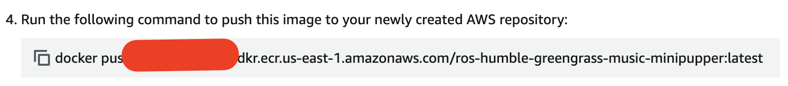

Robot Control using Raspberry Pi
(Spain) Week 3 - Docker and Cloud Services
Li Bai ![]()
Temple University
July 14, 2025
Docker

- Install Docker (macOS/Linux/Windows)
- Key Docker commands:
Docker Installation
sudo apt update
sudo apt install -y apt-transport-https ca-certificates curl software-properties-common
curl -fsSL https://download.docker.com/linux/ubuntu/gpg | sudo apt-key add -
sudo add-apt-repository "deb [arch=amd64] https://download.docker.com/linux/ubuntu focal stable"
sudo apt install docker.io -y
sudo usermod -aG docker $USER
sudo reboot
Download here - download based on your processor
If you need to update your kernel, try to type the following command in your command window
run docker insider your WSL
Docker Process
- ensure we can setup for arm process
sudo apt-get update && sudo apt-get install -y --no-install-recommends qemu-user-static binfmt-support docker-compose
sudo update-binfmts --enable qemu-arm
sudo update-binfmts --display qemu-arm
sudo apt-get install -y qemu-user-static binfmt-support
docker run --rm --privileged multiarch/qemu-user-static --reset -p yes- see what you will need to do with Dockerfile
- find the docker image and export it as an image.tar
create an audio folder on minipupper
mkdir ~/minipupper/playlistmove imag_name.tar and docker-compose.yaml to the minipupper
load the image

mkdir ~/tmp & cd ~/tmp
wget https://raw.githubusercontent.com/lbaitemple/mini_pupper_ros_aws/refs/heads/ros2-dev-music/greengrass/docker-compose.yaml- check the docker-compose.yml
pupper-robot:
image: ros-humble-greengrass-music-minipupper:latest
devices:
- "/dev/snd:/dev/snd" # Pass the sound device from the host to the container
volumes:
- /tmp/esp32-proxy.socket:/tmp/esp32-proxy.socket
- /home/ubuntu/minipupper/playlist:/app/audio - docker compose up with docker-compose.yaml file
- check the service in docker exec
source /opt/ros_demos/setup.bash
ros2 service call /play_music mini_pupper_interfaces/srv/PlayMusic "{file_name: 'robot0.mp3', start_second: 3}"
ros2 service call /stop_music mini_pupper_interfaces/srv/StopMusic- send music file to the topic in docker exec
- stop the music using the topic in docker exec
- check log of docker container
Docker Image in WSL (W)
- install mangdang folder in WSL home folder
- If you had a mangdang folder, please update the folder
- install docker without docker-hub app
- restart ubuntu WSL
- If docker not working properly with
docker ps -a
- login wsl
- make sure you add arm cross compile
- copy one line at a time
- create a docker image for raspberry pi on WSL
cd ~/
git clone -b ros2-dev-music https://github.com/lbaitemple/mini_pupper_ros_aws/ mini_pupper_ros_music
cd mini_pupper_ros_music/
docker-compose build
ECR setup (A)
- get all ECR cmds (1, 3 and 4)
tag the image

copy it into wsl

- tag the image 
- copy it into wsl
- verify image is uploaded to ECR
MQTT (AM)
- Also, try
music_filewith a name orstop
- Also, try
dance_configwith a name `
## Demo Code
- check docker-compose log and see what message is passed

Robots, Building Cloud Connected. 2021. “Building Cloud Connected Robots.” 2021. https://catalog.us-east-1.prod.workshops.aws/workshops/fa208b8e-83d6-4cc1-8356-bfa5b6184fae/en-US.